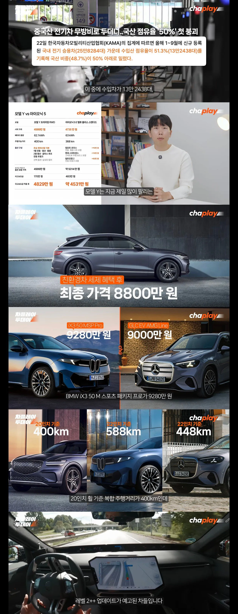

사실상 같은급 대비 가격경쟁력은 세금으로 확보하는 셈이고
문제는 테슬라 bmw 벤츠가 지금파는 차들은 법만 개정되면 업데이트로 반자율 주행에 가까운 주행보조장치가 생기는데
지금 파는 현대차의 주행보조는 직진만 하다가 멈춰있는 차 인식못하고 쳐박는 수준에서 더 나아지지 못한채 유기될거까지 생각하면
현대차 자체가 거대한 '그돈씨'가 되는느낌
ㅊㅊhttps://www.fmkorea.com/index.php?document_srl=10531938903&mid=humor&cpage=13
나도 돈없어 현기차 타지만 기술혁신도 없고 as도 옛날같지도 않고 전기차 고장이면 하이테크 센터 입고로 쉽지 않고 가격이 비슷하면 테슬라 사지